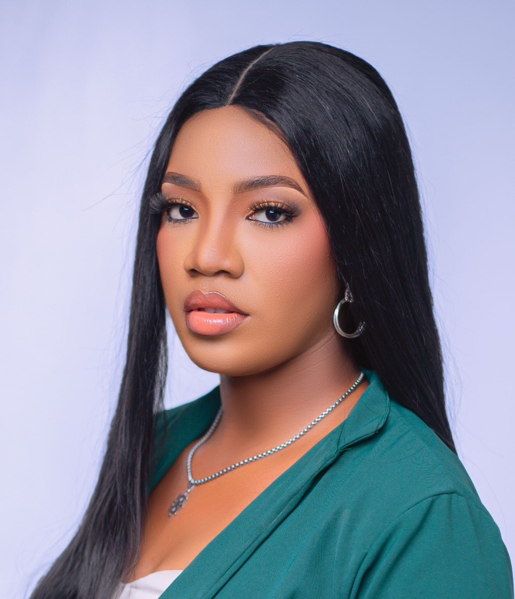

SOPHIA ERUEMU

SUMMARY:
Detail-oriented professional with top skills in customer relations, problem-solving and recordkeeping.Talented in addressing different service and product problems with thorough and positive style. Ready to help with focus on finding creative solutions to conflicts and complaints.
EXPERIENCE:
-
CUSTOMER RELATION OFFICER(sept 2022-current)
Microbridge technology solutions limited, Abuja,Nigeria.
- Addressed customer iniquires, comments, and complaints across different communication channels such as phone calls,emails or social media platforms.
- Successfully resolved customer issues,striving for satisfactory outcomes that benefit both customers and company.
- Worked closely with various departments to identify and meet customer needs, resulting in improved customer satisfaction.
- Maintained accurate records of customer interactions.
-
NYSC (SCHOOL TEACHER) may 2021-april 2022
Witty kids school, Nassarawa,Nigeria.
- Created and implented lesson plans incorporating multiple teaching methods in order to effectively address the individual requirements of students.
- Maintained accurate and up-to-date school attendance data.
- Developed and created comprehensive exams and test questions.
- Evaluated score outcomes for tests and exams.
-
VISUAL SUPPORT ASSISTANCE/CALL REPRESENTATIVE (aug 2021-november)
Family first life insurance.
- Uploaded updated customer data.
- Facilitated the booking of client appointments via telephone communication.
- Delivered efficient administrative assistance remotely.
- Effectively handled all forms of correspondence and phone interactions.
- Providing detailed information about services of the organization to potential clients through prompt responses and clear explanation.
- Maintained and coordinated manager's contacts and schedules.
SKILLS:
- Salesforce CRM
- Complaint investigations
- Escalated complaints handling
- Customer portforlio development
EDUCATION:
- University of Benin, Benin,Nigeria
Bachelor of Arts, B.A(E.D)English and Literature..2019
- Dolafield College, Lagos,Nigeria
WAEC..2013